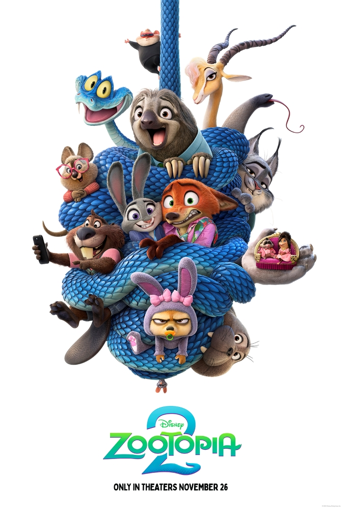
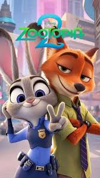
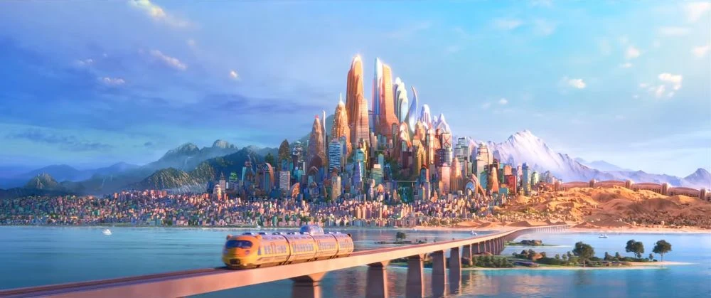

Judy Hopps, uma coelha determinada que supera preconceitos para se tornar a primeira policial coelha na metrópole de Zootopia. Ao investigar o desaparecimento de animais, ela forma uma dupla improvável com Nick Wilde, um raposo vigarista, desvendando uma conspiração que ameaça a harmonia entre predadores e presas.
Orquidário Municipal de Santos (SP)
No topo do Pico da Tijuca, você encontra uma antiga inscrição apontando que a próxima pista está localizada no Amazonas.

Você decide que a aventura é grande demais e volta para casa, mas sempre se pergunta o que teria encontrado.
Nas igrejas de Olinda, você descobre um mapa antigo escondido atrás de um altar, apontando que a próxima pista está no Amazonas.
Explorando as praias, você encontra uma caverna escondida, mas ela leva a um beco sem saída.
No Amazonas, a busca pela cidade perdida se intensifica. Você se depara com um rio bifurcado.
De volta às igrejas, você finalmente encontra o mapa antigo. Agora, para o Amazonas!
O rio à esquerda leva você a uma cachoeira escondida com inscrições antigas que revelam a entrada da cidade perdida.
O rio à direita termina em uma área pantanosa. Apesar de belas vistas, não há sinais da cidade perdida aqui.

Dentro da cidade perdida, você descobre tesouros inimagináveis e decide se dedicar a estudar e preservar este lugar
Retornando e escolhendo o rio à esquerda, você finalmente encontra a cachoeira escondida e as inscrições que levam à cidade perdida.